Точность измерений
Лазерное
сканирование
Точные исходные данные для проектирования, реконструкции и эксплуатации — от полевых работ до готовой документации
Ключевые технические параметры
Точность, которую
можно измерить
Точность регистрации
Детализация BIM-модели
Геодезическая привязка
Партнёр на всех
этапах проекта
- 01
Лазерное сканирование
Точная фиксация существующего состояния объекта
- 02
Обработка данных
Сшивка, очистка и классификация облака точек
- 03
Обмерная документация
Планы, фасады, разрезы и чертежи в нужных форматах
- 04
3D / BIM-моделирование
Цифровая модель существующего объекта под задачи проекта
- 05
Данные для проектирования
Подготовленные материалы для дальнейшей работы
- 06
Проектирование
Проектные решения на основе полученных точных данных
Что получает
заказчик
Облако точек
Точная цифровая копия объекта
E57 · RCP · LAS · PLYОбмерные чертежи
Планы, фасады, разрезы и другая документация
DWG · PDF · DXF3D / BIM-модель
Модель существующего объекта под задачи проекта
RVT · IFC · NWDИсходные данные
Подготовленные материалы в нужных форматах
AutoCAD · Revit · Civil 3DНаш опыт
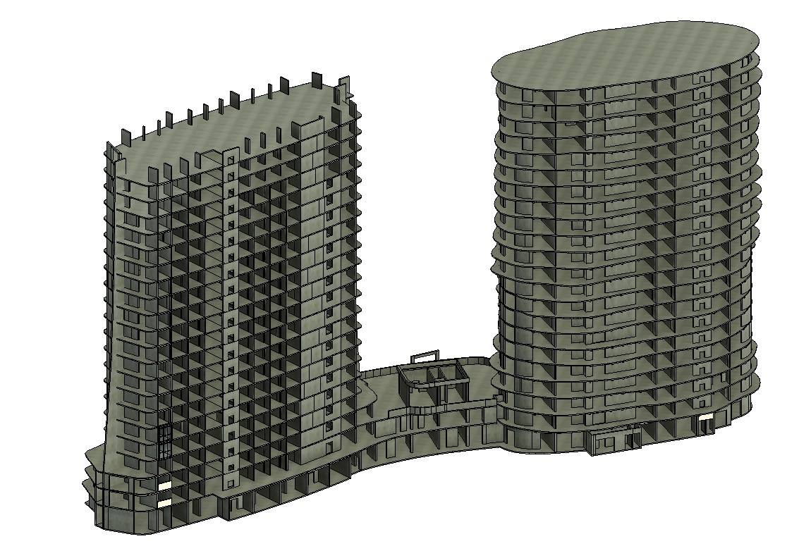
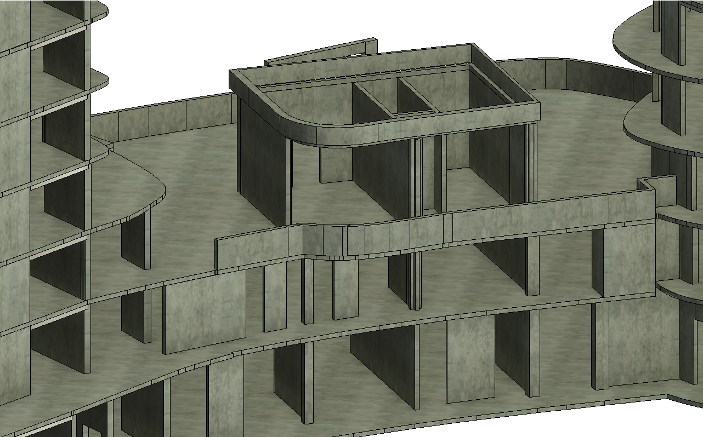
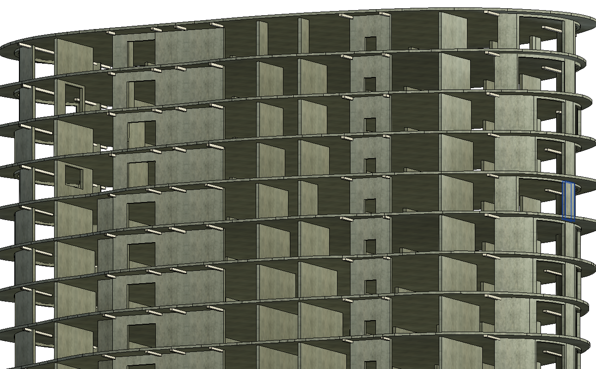
01 / 03
01 / Евпатория
Мойнако Резорт
Наземное сканирование фасадов, сшивка и очистка облака точек, создание BIM-модели для дальнейшего проектирования остекления.
- Объект
- Туристическо-рекреационный комплекс
- Результат
- 3D-модель фасадов
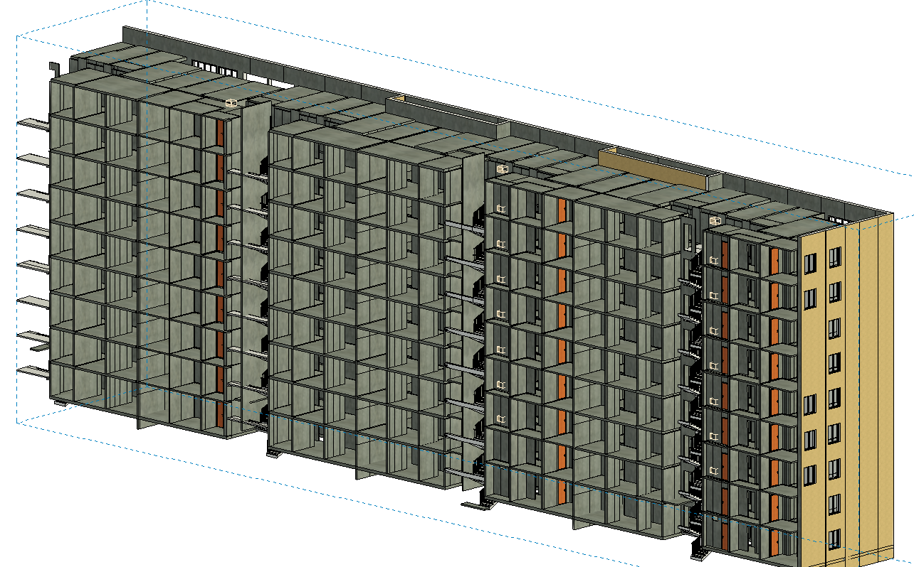
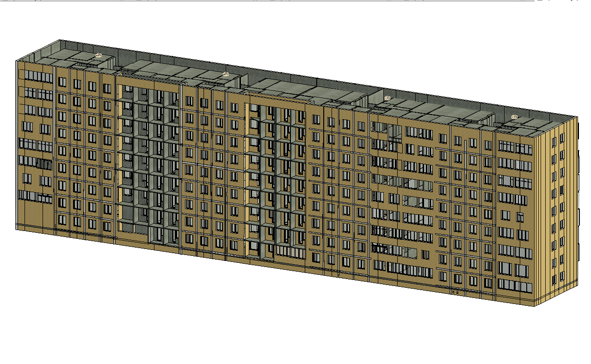
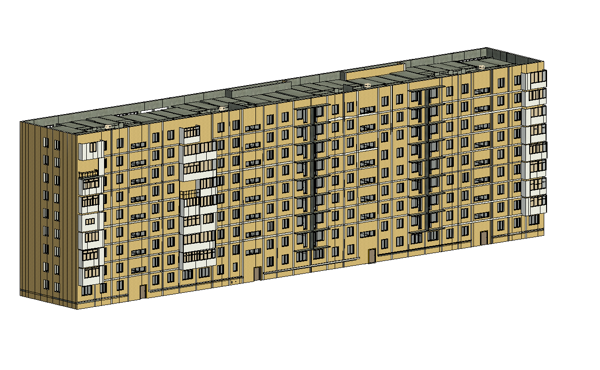
01 / 03
02 / Мариуполь
Девятиэтажное здание
Сканирование объекта и создание полной модели для дальнейших проектных работ.
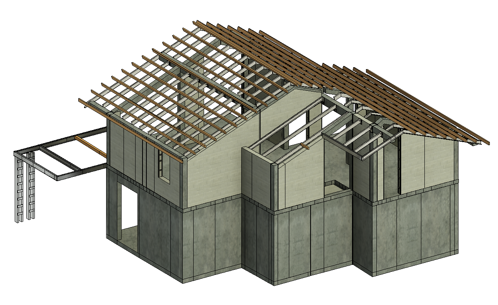
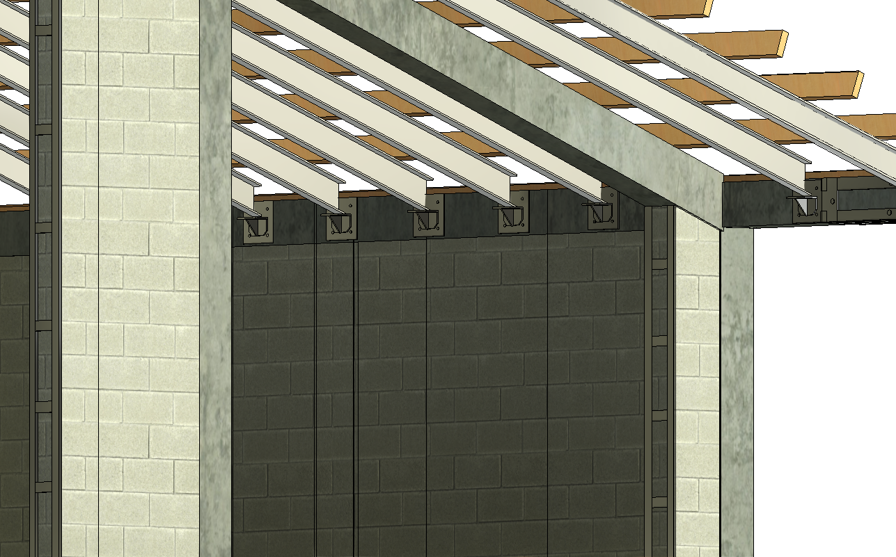
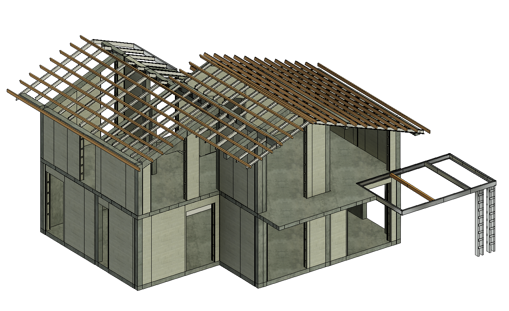
01 / 03
03 / Алушта
Коттедж в Лучистом
Точные исходные данные и 3D-модель существующего здания для нового этапа проектирования.
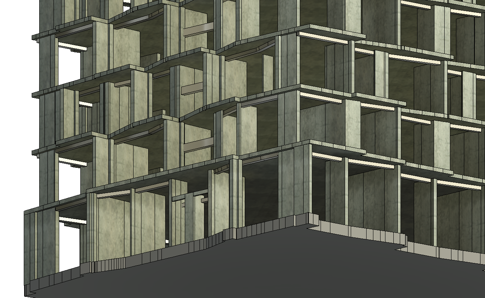
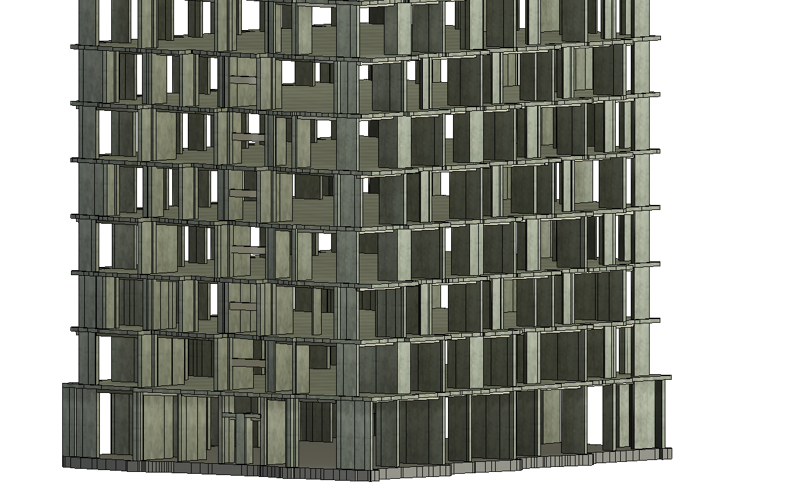
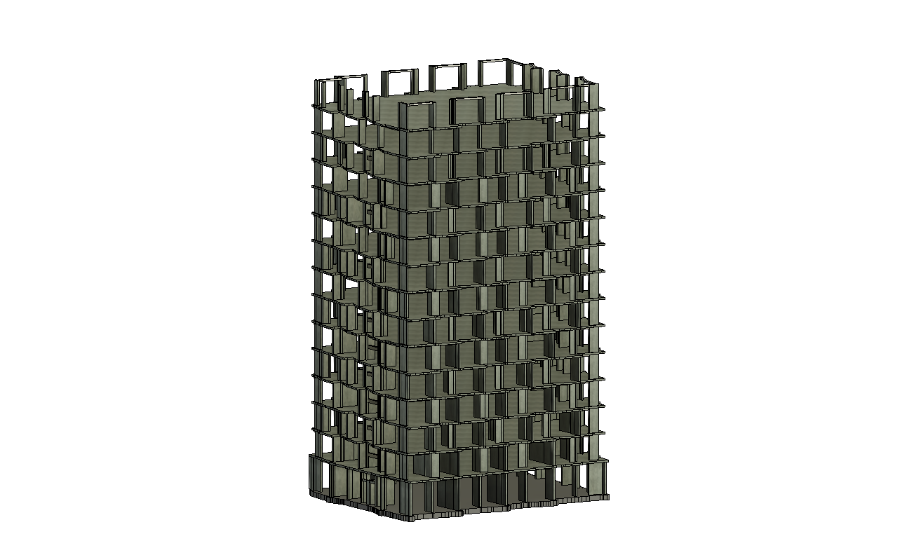
01 / 03
04 / Симферополь
Жилой дом «Омега»
Модель фасадов по данным лазерного сканирования для проектирования системы остекления.
Стоимость услуг
Сканирование
и облако
Сканирование
- Цветное
- 60 руб/м²
- Чёрно-белое
- 50 руб/м²
- Без фотографий
- 40 руб/м²
Сшивка облака
- До 30 точек
- 15 руб/м²
- 30–100 точек
- 20 руб/м²
- Более 100 точек
- 25 руб/м²
Очистка облака
- Простая
- 5 руб/м²
- Сложная
- 10 руб/м²
3D / BIM
моделирование
AutoCAD по облаку точек
- 3D-полилинии
- 45 руб/м²
Выдача схем — 4 000 руб/схема
Revit по облаку точек
- Модель LOD 200
- 80 руб/м²
- Модель LOD 300
- 120 руб/м²
Обмерные планы, разрезы и фасады — 4 000 руб/схема
Полигональная сеть
- Leica Cyclone
- 80 руб/м²
Чертежи
и контроль
2D-схемы в AutoCAD
- По облаку точек
- 4 000 руб/схема
Расчёт отклонений
- Leica Cyclone
- 3 000 руб/схема
Сравнение с проектом заказчика и выдача схем с отклонениями
Финальная стоимость зависит от площади, сложности объекта и состава выдаваемых материалов.
Уточнить стоимость по вашему объектуОборудование для
точных измерений
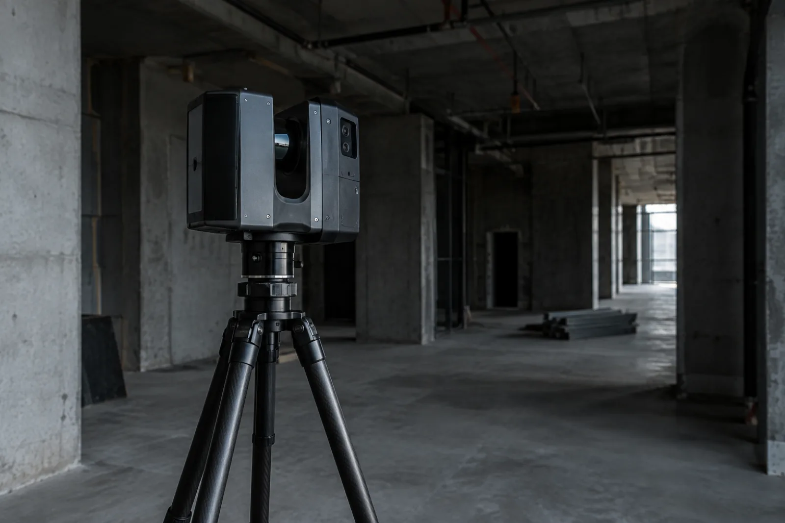
Лазерное сканирование
Точная фиксация геометрии помещений, фасадов и сложных конструкций.
- Наземные сканеры
- SLAM и мобильные системы
- Штативы и марки
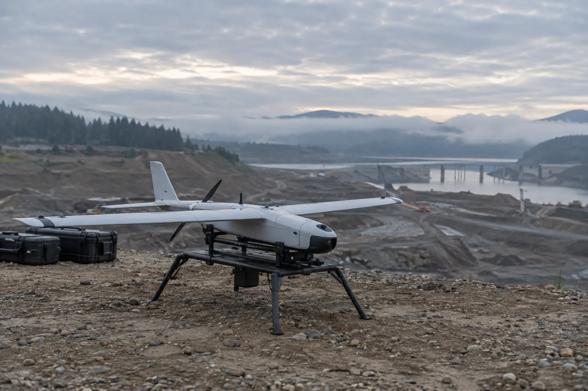
Аэросъёмка
Съёмка территории, кровель и протяжённых объектов с воздуха.
- БПЛА самолётного типа
- Квадрокоптеры
- Геодезическая привязка
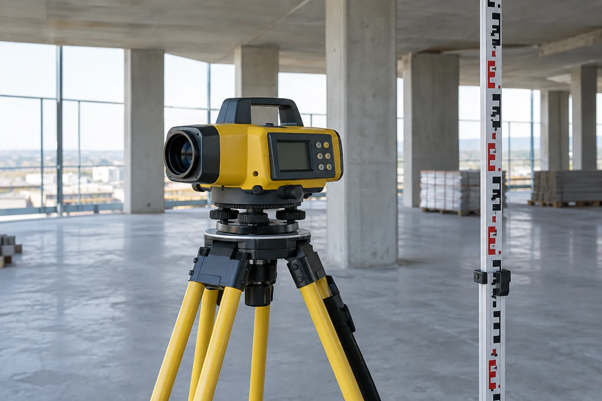
Высотные измерения
Контроль отметок и точное определение перепадов высот на объекте.
- Цифровые нивелиры
- Оптические нивелиры
- Рейки и штативы